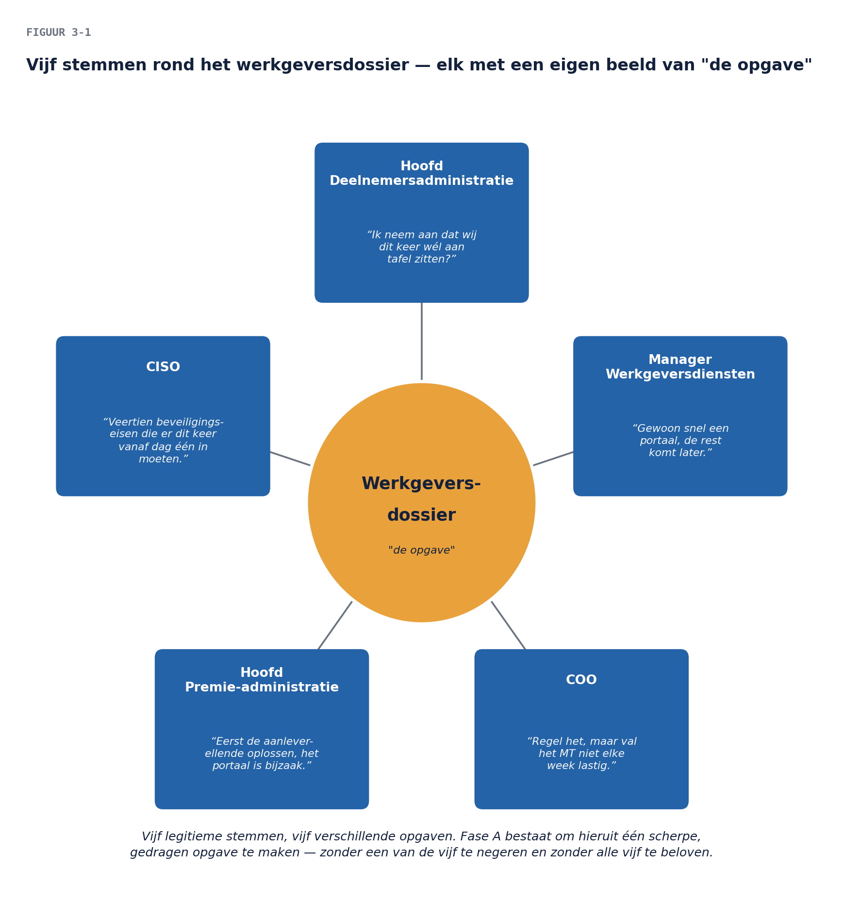

01
Casus: de opdracht is binnen — en meteen te groot
⏱ 14 minHet A4-memo uit deel 2 is besproken in het MT. De opdrachtgever — de COO — heeft de architectuurfunctie formeel gevraagd fase A te starten voor het werkgeversdossier. In de eerste week gebeurt wat altijd gebeurt: iedereen die van de opdracht hoort, heeft er een mening over.
- De manager Werkgeversdiensten wil “gewoon snel een portaal, de rest komt later”.
- Het hoofd Premie-administratie wil “eerst de aanleverellende oplossen, het portaal is bijzaak”.
- De CISO stuurt een lijst met veertien beveiligingseisen “die er dit keer vanaf dag één in moeten”.
- Het hoofd Deelnemersadministratie mailt: “Ik neem aan dat wij dit keer wél aan tafel zitten?”
- De COO zelf zegt: “Regel het, maar val het MT niet elke week lastig.”
Vijf stemmen, vijf verschillende opgaven. Fase A bestaat om hieruit één scherpe, gedragen opgave te maken — zonder een van de vijf te negeren en zonder alle vijf te beloven. Dat is geen administratie; dat is het moeilijkste ambachtelijke werk van de hele cyclus.

Controlevraag
Uit Werkboek deel 3, Opdracht 1
1Welke stakeholder uit jullie lijst had bij WGP 2.0 óók op de lijst gestaan als iemand deze exercitie had gedaan — en waarom stond die er toen toch niet op?Toon antwoord
a. Modellijst (twaalf-plus): COO (opdrachtgever), CFO, manager Werkgeversdiensten, hoofd Premie-administratie, hoofd Deelnemersadministratie, CISO, functionaris gegevensbescherming, applicatiebeheer, integratieteam, leverancier premiesysteem, werkgevers (te segmenteren: groot met eigen software / klein via portaal), administratiekantoren, Financiën (grootboekaansluiting), OR (bij organisatiegevolgen), DNB. Zelf te vinden — want stil in de casus: administratiekantoren, Financiën, FG, applicatiebeheer. b. Klassieke verschuiver: DNB — van “volgen” naar “intensief betrekken” zodra datamigratie of uitbesteding aan de orde komt. Ook goed: OR (verschuift bij organisatiegevolgen van standaardisatie) en de leverancier (verschuift zodra het doellandschap zijn positie raakt). c. Sterke keuzes met argument: administratiekantoren (zij doen het feitelijke aanleverwerk voor honderden werkgevers; een portaal dat hen negeert lost niets op — de externe B11), Deelnemersadministratie (gegevens stromen door; de bewezen B11), applicatiebeheer (kent de baseline die niemand documenteerde — B3 — en kan de cyclus maken of breken met kennis of stilte). d. Modelantwoord: de Deelnemersadministratie — of scherper: de administratiekantoren, die bij WGP 2.0 in geen enkel document voorkomen. Waarom niet: WGP 2.0 identificeerde stakeholders langs de projectopdracht (“wie vroeg om het portaal”) in plaats van langs de waardestroom (“door wiens handen gaan de gegevens”). De zoekrichting bepaalt de vangst.